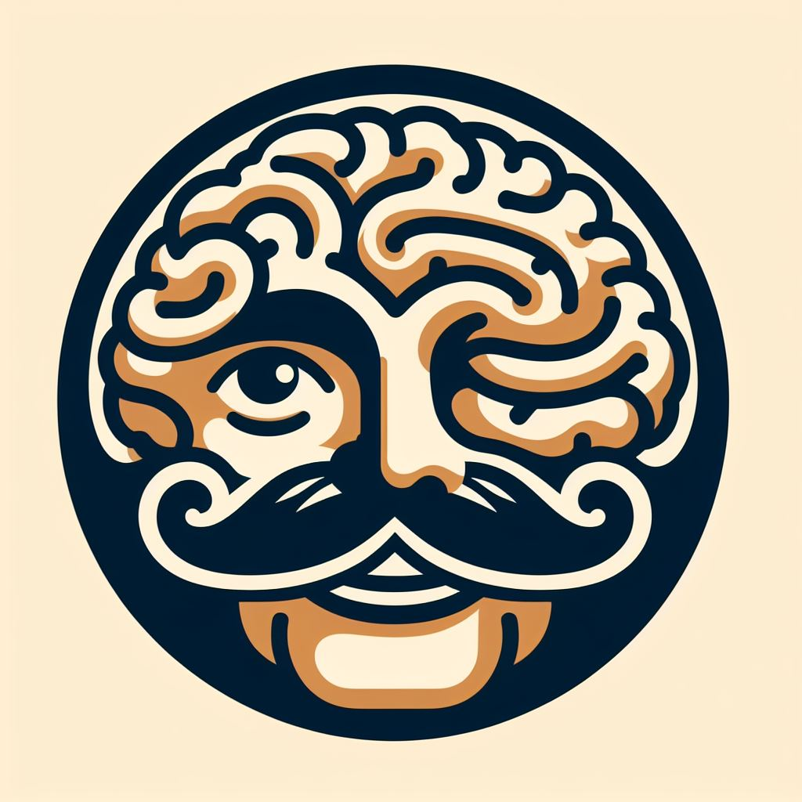
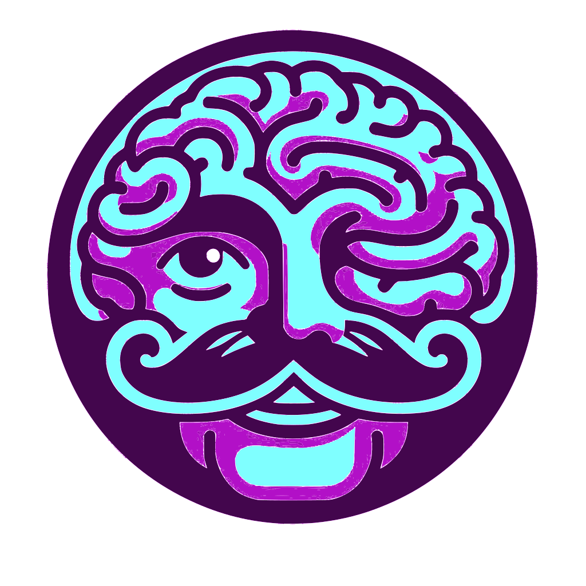

Visual Design and Web Project Assignment 1 - Image 1
Objective
Produce a web optimised logo with text in multiple colours for use in light and dark themed pages that matches the Embodied Mind brand colours.
The Process
The starting point was a JPG image created for The Embodied Mind web site.

This was then converted to vector format using Inkscape, to trace the bitmap and recoloured to use the Embodied Mind purple and cyan colours and saved as an SVG file.

The SVG file was then converted to an intermediate PDF file for use in a LaTeX document (since
LaTeX does not natively support SVG files), using the command line tool Inkscape with the
following command:
inkscape -z -f logo-embodied-mind-coloured.svg -A logo-embodied-mind-colour.pdf
LaTeX documents were then created to include the pdf file, and the Embodied Mind name on a curved path.
\documentclass[border=5mm]{standalone}
\usepackage{contour}
\usepackage{ifthen}
\usepackage{graphicx}
\usepackage{tcolorbox}
\usepackage{tikz}
\usepackage{xcolor}
% load the tikz libraries we need
\usetikzlibrary{decorations.markings, decorations.text, positioning, shapes}
\input{../common/colours.tex}
\begin{document}
\begin{tikzpicture}
% Draw the image (Using the converted PDF version)
\node[anchor=center] at (3cm,-1cm) {\includegraphics[width=0.25\textwidth]{svg-inkscape/logo-embodied-mind-coloured-tex.pdf}};
\path[
decoration={
raise = -3ex, % Adjust this value to move the text up or down
text along path,
text = {| \sffamily \huge \color{tem_purple} | The Embodied Mind}, % use tem_cyan for cyan version
text align = center,
},
decorate
] (0,0) arc [start angle=-180, end angle=0, radius=3cm];
\end{tikzpicture}
\end{document}
These were compiled to PDF files using pdflatex, and converted back to SVG format using pdftocairo to produce the final logo images in both purple and cyan versions.